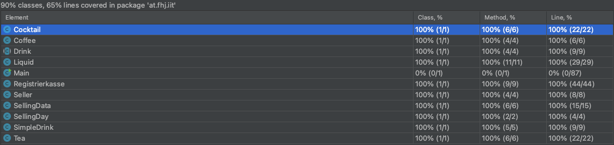

Drinks
JavaDoc and Test Coverage
- JavaDoc
- Test Coverage
- Test Coverage Explanation
Design Decisions and Code Explanation

Testing the Main.java seems useless, as it just calls all the other methods from the different Classes.
Coffee.java Class can be seen as deprecated as the creator of this class has to repeat the first semester and therefore is no longer contributing to this project.
The Registrierkasse.java class shows 100% Coverage in IntelliJ but javacoco shows a litte less. However, I still believe it is tested sufficiently
All the other Classes have a Coverage of 100%.
